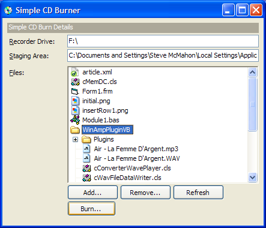
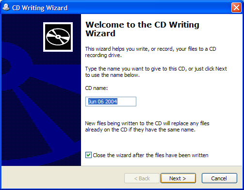
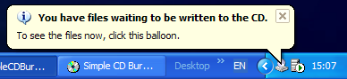

VB5 Simple CD Burner (70K)
VB5 Simple CD Burner (70K)
 VB6 Simple CD Burner (67K)
VB6 Simple CD Burner (67K)
 12 Jun 2004
12 Jun 2004
First Posted
 vbAccelerator TreeView Control
vbAccelerator TreeView Control
 VB IMAPI (CD Burning) Interfaces (IVBIMAPI.tlb)
VB IMAPI (CD Burning) Interfaces (IVBIMAPI.tlb)

Simple Data CD Creation Using ICDBurn
Windows XP and above include built-in support for burning CDs. This sample demonstrates how to use the simple ICDBurn API included in the shell to create data CDs from within a Visual Basic application.
About the ICDBurn API
The ICDBurn interface is a very simple API which provides access to the CD writing functionality you get in Explorer. The API provides three functions:
- To determine whether there is hardware capable of writing to a CD on the system.
- To get the drive letter of the CD writer device.
- To programmatically initiate a CD writing session.
Being such a simple API means that it's use is also rather limited. The main limitations are: you can only burn to the system's default recorder; you cannot write programs for unattended burning (because calling the Burn method will bring up the CD Burning Wizard that the user must interact with) and you cannot create audio CDs. The other samples in this section describe the more sophisticated IMAPI (Image Mastering API) interfaces which can be used to do all of these things.
About ICDBurn
The standard implementation of this interface is implemented by a shell folder extension interface within Shell32.DLL. To use it you need to be able to do two things: firstly, get access to the ICDBurn interface and secondly to create an instance of the shell folder extension object. I'll cover these in turn.
1. Getting Access to the ICDBurn Interface
To obtain access to a COM interface in VB, you generally need a type library which describes the methods of the interface. The ICDBurn does not come with a Type Library, but you can get an IDL definition of it from the shobjidl.idl provided with the Platform SDK. This can then be turned into a Type Library using the MkTypLib command line tool, which can be obtained by downloading the Platform SDK. Note that whilst IDL files can always be turned into Type Libraries using MkTypLib , the tlb that is generated will not always be usable from VB unless you manipulate the declares a bit. In the case of ICDBurn, though, the IDL is pretty much usable without modification.
Here's the resulting ODL needed to call the interface (I'm not sure what the difference between "ODL" and "IDL" actually is - they look the same to me - but apparently ODL is a more modern version so it's what I always try for):
// ---------------------------------------------------------------------------------
// ICDBurn
// ---------------------------------------------------------------------------------
[
odl,
uuid(3d73a659-e5d0-4d42-afc0-5121ba425c8d),
helpstring("ICDBurn interface")
]
interface ICDBurn : IUnknown
{
[helpstring("Gets the drive letter of the default recorder")]
HRESULT _stdcall GetRecorderDriveLetter(
[out] LPWSTR pszDrive,
[in] long cch );
[helpstring("Burns the files in the staging area to disc")]
HRESULT _stdcall Burn(
[in] long hWnd );
[helpstring("Gets whether the system has a recordable drive")]
HRESULT _stdcall HasRecordableDrive(
[out] long *pfHasRecorder);
};
This ODL has been included in my VB IMAPI Interfaces Type Library.
2. Creating an Instance of the Shell Folder Extension
Normally in VB there are two ways to create a new object:
- Using the New operator to instantiate an local or referenced object.
- Using CreateObject to create an object from its ProgId.
However, the Shell Folder which implements ICDBurn has neither a way to reference it by name nor by a ProgId. It can only be created using its CLSID, which is a problem for VB because there is no direct support for doing this (even though under the covers VB ultimately has to convert some New and all ProgId references into CLSIDs).
The way around this is to use the CoCreateInstance function exported by OLE32. This typically opaque function has the following declare (in ODL):
LONG CoCreateInstance(
[in] UUID *CLSID,
[in] stdole.IUnknown *pUnkOuter,
[in] CLSCTX dwClsContext,
[in] UUID *IID,
[out] void *ppv);
In practice it isn't that hard to use. The parameter are set as follows:
- CLSID - a UUID structure containing the CLSID of the class to instantiate.
- pUnkOuter - used when aggregating the IUnknown interfaces of multiple objects, but can typically be set to Nothing.
- dwClsContext - defines whether the component is created in the same process, in another process, or on a different machine.
- IID - a UUID structure containing the IID of the desired interface supported by the class to instantiate.
- ppv - filled in with the newly created object, assuming all is successful.
The function returns a HRESULT to indicate success or failure of the object creation. The idea of a HRESULT is to encode three levels of information about the result: the severity, something known as the facility which categorises the result and the actual error code. In most cases all you are interested in is whether the function succeeded or failed, which can be determined by checking the severity bit of the HRESULT:
Private Const FAIL_BIT As Long = &H80000000 Private Function FAILED(ByVal hResult As Long) As Boolean FAILED = ((hResult And FAIL_BIT) = FAIL_BIT) End Function
Knowing that we can now instantiate the object:
Private m_cdBurn As ICDBurn
Public Sub Initialise(ByVal hWndOwner As Long)
' Set up the CLSID of the Shell Extension which
' contains the ICDBurn implementation:
Dim clsidCDBurn As UUID
With clsidCDBurn
.Data1 = &HFBEB8A05
.Data2 = &HBEEE
.Data3 = &H4442
.Data4(0) = &H80
.Data4(1) = &H4E
.Data4(2) = &H40
.Data4(3) = &H9D
.Data4(4) = &H6C
.Data4(5) = &H45
.Data4(6) = &H15
.Data4(7) = &HE9
End With
' Set up the IID of the ICDBurn interface which
' we want to obtain:
Dim iidCDBurn As UUID
With iidCDBurn
.Data1 = &H3D73A659
.Data2 = &HE5D0
.Data3 = &H4D42
.Data4(0) = &HAF
.Data4(1) = &HC0
.Data4(2) = &H51
.Data4(3) = &H21
.Data4(4) = &HBA
.Data4(5) = &H42
.Data4(6) = &H5C
.Data4(7) = &H8D
End With
' Create the instance of the object:
Dim hr As Long
hr = CoCreateInstance( _
clsidCDBurn, Nothing, CLSCTX_INPROC_SERVER, _
iidCDBurn, m_cdBurn)
If (FAILED(hr)) Then
Err.Raise ERR_BASE + 1, App.EXEName & ".cSimpleCDBurner", _
"Failed to instantiate CDBurn implementation"
End If
m_hWndOwner = hWndOwner
End Sub
The one nice thing about using this method is that you don't need to worry about AddRef and Release. When CoCreateInstance returns the object, it automatically calls AddRef on it. When VB sets the object to Nothing later when it goes out of scope, VB will call Release. This means you have a paired AddRef/Release call, which is not the case with COM calls that return a pointer to a pointer to an object.
Using ICDBurn
As you will have seen from the interface spec above, there's not too much to ICDBurn. The HasRecordableDrive method tells you whether the system has a recordable drive; if so then the GetRecorderDriveLetter will return the path to the drive (e.g. F:\). If your system has more than one drive, this returns the default recording drive. Finally, the Burn method starts the wizard for burning the content in the staging area to the disc:
The location of the staging area is configured in the registry and can be obtained by using the SHGetSpecialFolderLocation Shell function using the CSIDL_CDBURN_AREA constant. Using this function needs a little fiddling around with the IMalloc object provided by the Shell, so this is also included in the Type Library.
Note that when you change the contents of the staging area, Windows will probably pop up a Tray notification informing you of the change, and allowing you to view the files. There may well be a way of turning this off, but I'm not sure:
To wrap up ICDBurn for ease of use from VB, the sample includes the cSimpleCDBurner class. This should be self-explanatory in operation, but essentially to create a data CD you will do this:
Private m_cBurn As New cSimpleCDBurner Set m_cBurn = New cSimpleCDBurner ' Note that the m_cBurn.Initialise Me.hWnd ' Get the staging area: Dim sStagingArea = m_cBurn.BurnStagingAreaFolder ' Copy files and folders to the staging area here ' Finally burn the CD m_cBurn.Burn
The sample also includes a starting point for providing a tree view which you can use to configure the files, but note this isn't entirely complete yet and will need a little work before it is fully usable.
Conclusion
This sample demonstrates how to write files to CDs using the simple CD Burning API provided with Windows XP and above. Although rather limited this API could well be perfectly adequate for many CD creation/backup purposes.